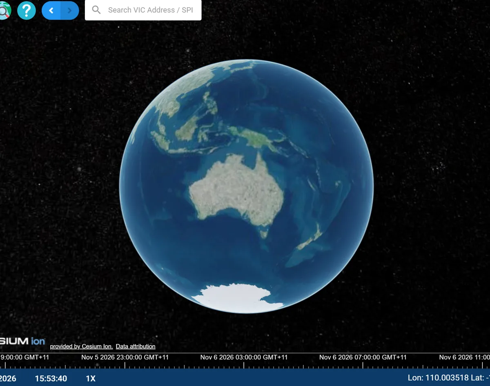

City indicators need Census tables, homelessness estimates and OpenStreetMap data
Each source sits in a different place and format, and is hard to find
Each group supplies one theme for all of Australia, and needs the others’ data for its own city
| # | Indicator | Data source | Supplied by |
|---|---|---|---|
| 1 | Household income | Census (HIND) | Group 1 |
| 2 | Employment rate | Census (LFHRP) | Group 2 (us) |
| 3 | Homelessness | ABS homelessness | Group 4 |
| 4 | Chronic conditions | Census (CLTHP) | Group 2 (us) |
| 5 | Gender pay gap | Census (INCP) | Group 1 |
| 6 | Green area per capita | OpenStreetMap | Teaching team |
| 7 | Hospital service area | OpenStreetMap | Teaching team |
5 of our 7 indicators depend on data that other groups or the teaching team publish.
Find any group’s layer through the IDI tag in the Digital Twin
Open, standard web services: WFS and WMS from GeoServer, in EPSG:4326
Calculate 7 SA2-level indicators and link them to SDG targets
LFHRP (labour force) and CLTHP (chronic health) counts for every SA2 in Australia
Published on GeoServer and tagged IDI so every group can use them
City profile of Greater Brisbane: 246 SA2s and 7 indicators
Built from layers shared by Groups 1, 2 and 4 and the teaching team
ABS Census 2021, ASGS Ed. 3 SA2 boundaries, OpenStreetMap
Clean, join, analyse; areas in EPSG:7856
ma_db database, one table per layer
g2_bris, g2_results; WMS and WFS in EPSG:4326
Metadata, IDI tag, Story Map
Other groups find our layers by the IDI tag and load them over WFS; we load theirs the same way. That loop is the infrastructure.

ABS 2021 labour force status counts
Built by Elvis and Henry
ABS 2021 chronic health condition counts
Built by Yanfei and Eliza
Measure
Estimated median weekly household income; grouped-band interpolation
Pattern
SDG 10.2 Social and economic inclusion of all, irrespective of income (proxy, not indicator 10.2.1)
SDG 1.2 Reduce the share of people living in poverty
Source: Group 1, ABS 2021 Census G33 household income counts (found via the IDI tag); Group 3 G02 medians used as a check
Measure
Employed persons ÷ population aged 15+ × 100; all employed categories
Pattern
SDG 8.5 Full and productive employment and decent work for all (proxy, not indicator 8.5.2)
SDG 10.2 Inclusion of all
Source: Group 2 (our Phase 1 layer), g2_bris:g2_indicator2_lfhrp_sa2_2021 (ABS 2021 Census LFHRP); Group 3 G43 rates used as a check
Both indicators are ratios of counts, so they stay in EPSG:4326 throughout.
Formula
Homeless persons ÷ total population × 100,000
Pattern
SDG 11.1 Adequate, safe and affordable housing for all (proxy, not indicator 11.1.1)
SDG 1.4 Equal access to basic services
Source: Group 4, g4_syd:sa2_homelessness_2021 (ABS Estimating Homelessness 2021, Table 5.3; Census G01 population)
Formula
(Persons with 0 + 1 condition) ÷ total persons × 100
Pattern
SDG 3.4 Reduce premature mortality from non-communicable diseases (proxy, not indicator 3.4.1)
SDG 3.8 Universal health coverage
Source: Group 2 (our Phase 1 layer), g2_bris:g2_indicator4_clthp_sa2_2021 (ABS 2021 Census CLTHP)
Formula
(Male − female average weekly income) ÷ male × 100
Findings
Method
SDG 8.5 Equal pay for work of equal value (proxy, not indicator 8.5.1)
SDG 5.1 End discrimination against women
Source: Group 1, g1_act:g17_sa2_personal_income_2021_sex (ABS 2021 Census G17)
Formula
Green space area (m²) ÷ SA2 population
Findings
Method
SDG 11.7 Universal access to safe, inclusive green and public spaces (proxy, not indicator 11.7.1)
Source: Teaching Team, idi_ma:greenspace_brisbane (OSM); population from our Indicator 2 layer
Formula
Area within 3 km of a hospital ÷ SA2 area × 100
Findings
Method
SDG 3.8 Universal health coverage and access to essential health services (proxy, not indicator 3.8.1)
Source: Teaching Team, idi_ma:health (OSM)
Woodridge is in Brisbane’s worst quarter on 6 of 7 indicators; Inala–Richlands, Ipswich–East and Redcliffe on 5
SDG 1.2, 8.5, 10.2 and 3.4 are furthest off track in the Logan–Ipswich–Redcliffe belt
Higher incomes alone will not deliver equal pay (SDG 8.5, 5.1)
Median green space: 43 m² per person where an SA2 is fully covered by hospitals, 426 m² where it has none
SDG 11.7 and 3.8 need different fixes in the inner city and the outer suburbs
| Challenge | How we solved it |
|---|---|
| National SA2 files too large to edit in QGIS | Loaded into PostGIS, queried Greater Brisbane only |
| Census tables and boundaries did not join | Matched on cleaned 2021 SA2 codes |
| Inconsistent OSM green-space tags | Filtered to an agreed list of park and reserve tags |
| Layers hard to find among all groups | Tagged every published layer with IDI |
| Grouped income and small populations | Estimate medians; keep nulls; flag small SA2s |
| Overlapping OSM green-space polygons | Dissolved before measuring, so no area is counted twice |
| Near-empty SA2s distorted map classes | Set to NULL below 100 residents |
For questions: press 1–7 to switch indicator, or 0 for the SDG overlap. Hover any SA2, or find one by name.
| Member | Indicators | Other contributions |
|---|---|---|
| Yanfei Zhang | Phase 2: Indicators 1–2 | Phase 1 CLTHP with Eliza; analysis, validation, metadata and slides |
| Eliza Wu | Phase 2: Indicators 3–4 | Phase 1 CLTHP with Yanfei; Indicators 3–4 Jupyter pipeline; analysis, validation, metadata and slides |
| Elvis Lin | Phase 2: Indicators 5–7 | Phase 1 LFHRP with Henry; Indicators 5–7 (calculation, GeoServer, DT metadata); SDG synthesis; slide design; live demo with Henry |
| Phuc Hung Nguyen | Phase 2: Story Map | Phase 1: GeoServer publishing and Digital Twin harvesting and sharing; Story Map; live demo with Elvis |